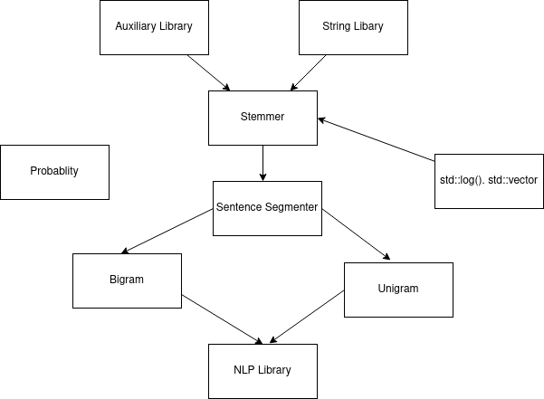

NLP Library
06.03.2022
About the project
| Created by- | Supervised by |
| Abhijit Paul | Dr. Zerina Begum |
| 1201 | Professor, IIT, DU |
What is natural language processing?
Process information contained in natural language so that computer can interact with human. In a broad overview,
p(I eat rice) = p(I| START) * p(eat|I) * p(rice|eat) * p(END | eat)
And if we have a corpus or collection of texts, we can use that to find the probablity very easily.
p(eat|I) = c(I eat)/c(I)
Of course, to build a library, we had to do a lot of:
- Preprocessing
- Normalizing
- Interprolation
Why NLP
Text is the largest repository of human knowledge and its growing quickly.
Forumns, Numerous Articles, Helplines, Trends
- Its
funto work on. It reduces the distace between human and computer.
Challenges
Learning Curves
Object Oriented Programming concepts implementation in C++.
Syntax, Differences with java
Natural Language Programming
Dan Jurafsky, Stanford
GNU Debugger for ease of debugging and it did wonders when we have a lot of different fuction calls.
watch, display, backtrace
Challenges I have faced
Heap management
- Implementing everything in raw c.
Program grows in size and then, it becomes hard to understand where to free the heap.
who uses who
- We passed variables
using pointerto reduce the overhead that comes from copying strings.
Modularization
We used it as a extension of using classes.
Fragmentation of file do not work!
private, public scope. Why private does wonders?
Hard to remember what I have done 7 days ago.
header file
- Isolating problems to debug.
Making a Maximum-matching Abbrebiation mathcer
My own solution!
Sentence Segmentation was a major hurdle. A simple decision tree became inadequate to segment sentences.
 Abbrebiations are hard to handle this way! So instead, we decided to use a maximum matching algorithm.
Abbrebiations are hard to handle this way! So instead, we decided to use a maximum matching algorithm.
Simple Regex
We have developed a simple regex function to help with the porter's algorithm.
- *S (The stem ends with a letter. S={a-ZA-Z})
- v (The stem
containsa vowel) - *d (The stem ends with double consonants)
- *o (The stem ends in CVC wher the second C is not W,X or Y)
Challenges I will face
Generating candidate set efficiently
For the latter part of our NLP library, we will need to generate a candidate set for spelling, grammatical or ambiguity error.
- Using a simple
minimum edit distancealgorithm. - Using Simple classifiers to gain O(logn)
Hardcoding Pronunciation Rules
Its a difficult one. We have yet to find a handy algorithm like porter's algorithm for stemming. We may hardcode rules from a grammar book.
Coreference Resolution
Bigram works fine for most of the cases, except for when we have coreference issue. Like this-
The work which was done by the machines in the past pays 7 dollar a month.
Here,
p(pays | past) <<<< p(pays | work)
How I solved the problems
We forsee a big speed in software development once we standarize the process.
Using OOP
Deallocation and management. It was a life saver!
Using simple classifiers
Arrange corpuses by folders like games,food etc
-Precomputation
Huge amount of time. Google.
Parts of the project that I loved
I will very Briefly talk about it.
- Implementing porters algorithm
- Using objects
- Reading the header file to understand previous works
- Isolately developing each module.
What we plan to do in the future?
- Spam Detection
- Named Entity Recognition
- Speech Recognition
- Sentence Correction
Project Structure

Thank You!
My project is about 40% done. Lines of Code = 1175
242 String-Library.cpp
29 String-Library.h
14 auxiliary.cpp
12 auxiliary.h
301 porters-algorithm.cpp
22 porters-algorithm.h
134 sentence-segmentation.cpp
33 sentence-segmentation.h
337 bigram.cpp
51 bigram.h
1175 total